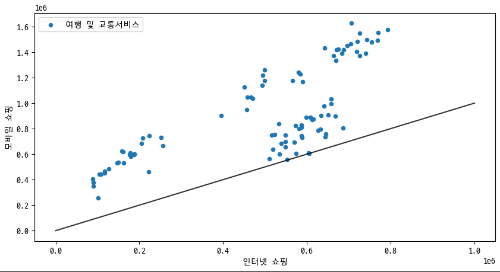
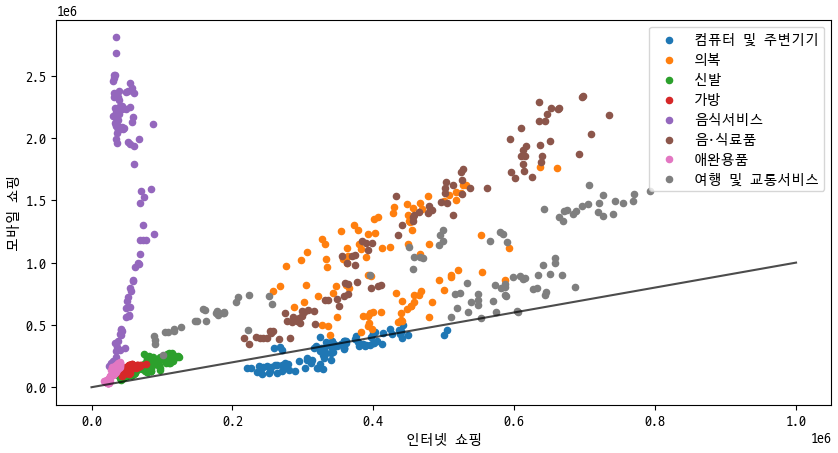
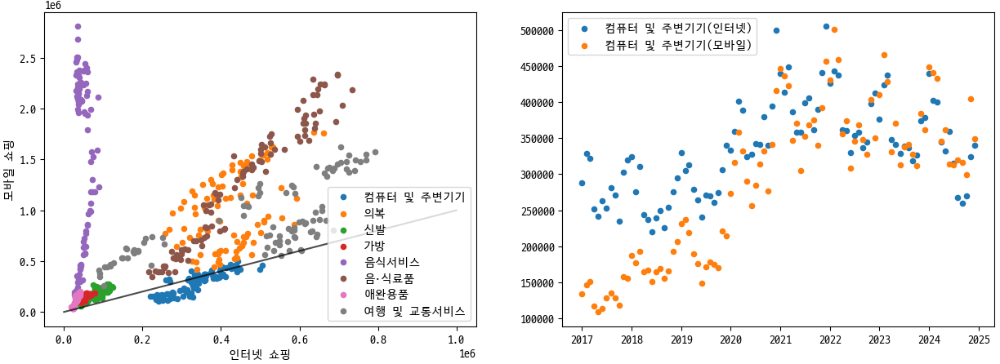

온라인쇼핑몰에서 카테고리별로 인터넷 및 모바일 쇼핑 거래액을 분석하였습니다. 데이터 전처리 및 시각화를 통해 두 채널 간 거래액 분포를 비교하고, 특정 카테고리들의 트렌드를 파악하는 프로젝트입니다.
import pandas as pd
from datetime import datetime
file_path='./ref/온라인쇼핑몰_판매매체별_상품군별거래액_20250227153229.csv'
ori = pd.read_csv(file_path, encoding='EUC-KR')
ori.columns = ['category','date','internet','mobile']
# 'date' 컬럼의 불필요 문자 제거 및 datetime 변환
ori['date'] = ori['date'].map(lambda x: x.rstrip(' p)'))
ori['date'] = pd.to_datetime(ori['date'], format='%Y.%m')
# 관심 카테고리만 필터링
categories = ['컴퓨터 및 주변기기','의복','신발','가방','음식서비스','음·식료품','애완용품','여행 및 교통서비스']
ex1_data = ori[ori['category'].isin(categories)]
아래 그래프는 ‘여행 및 교통서비스’ 카테고리에 대한 인터넷과 모바일 거래액을 비교한 산점도입니다.
여러 카테고리의 인터넷과 모바일 거래액을 산점도로 표현하여 비교했습니다.
‘컴퓨터 및 주변기기’ 카테고리의 인터넷 및 모바일 거래액이 시간에 따라 어떻게 변화하는지 나타낸 그래프입니다.
Pandas를 활용한 데이터 전처리 과정과 Matplotlib을 통한 시각화 기법을 실습하며, 다양한 카테고리별 데이터 비교 및 시간에 따른 변화를 분석할 수 있었습니다.